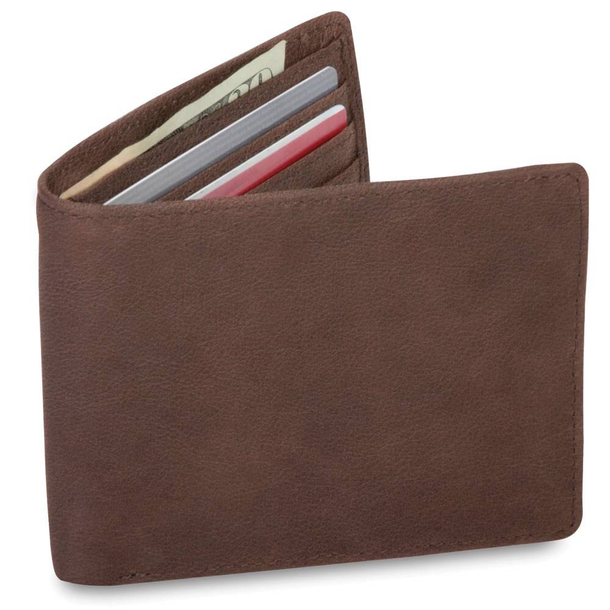
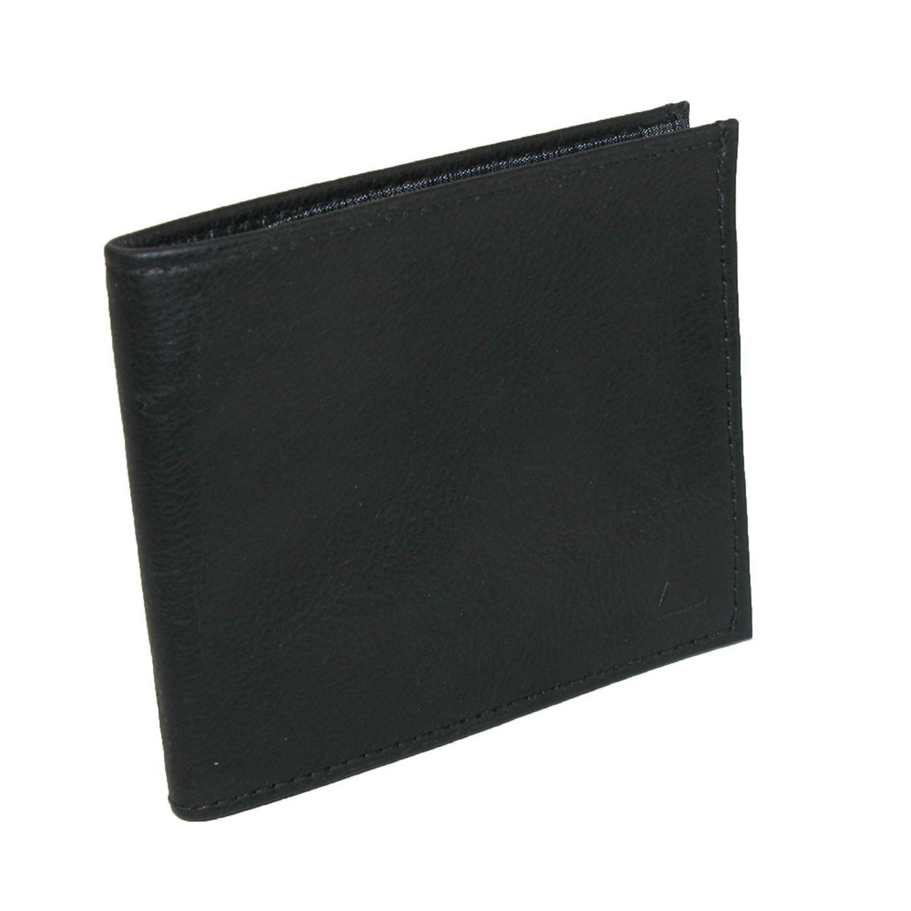
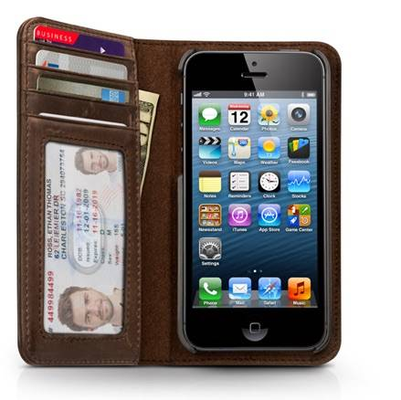
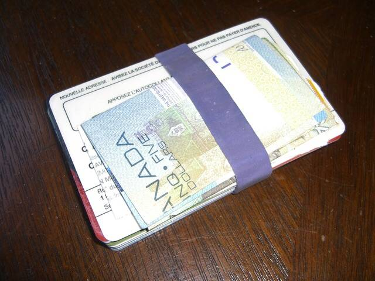
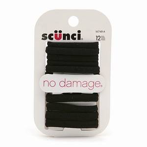
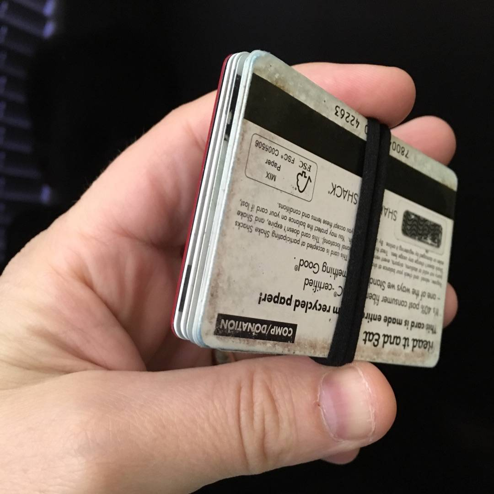

I Found a Wallet
-

For years I carried a normal wallet like this.
But I always hated sitting on it
-

I tried extra thin wallets.
And I was militant about getting rid of cards I didn't need to carry. I was never satisfied.
-

When I first got an iPhone 6 I really really hated how big it was. In desperation I tried a wallet case thinking it might actually make it easier to hold.
I didn't love this arrangement but I did love not having a bulky thing in my back pocket. It was so wonderful.
-

While pondering my wallet frustration one day I listened to the Regina Spektor song "Wallet" and decided to try just using a blue rubber band.
This was really really great because there was no bulk at all. I hardly notice it in my pocket. But alas the rubber band didn't last long. The sharp card edges cut through it and the grippy rubber made it hard to slide cards in and out. But I was converted...
-

Now I buy wallets in a 10 pack at Walgreens for $2.99.
They are exactly the right size, super durable, hold everything together nicely, the cards slide in and out easily, and they are cheap.
-

My wallet...
I've been carrying my junk this way for a couple of years now and I think I've finally found my perfect wallet.
-
As an added bonus, sometimes @sophster says "ugh my hair is bugging me, can I borrow your wallet?"
So handy!